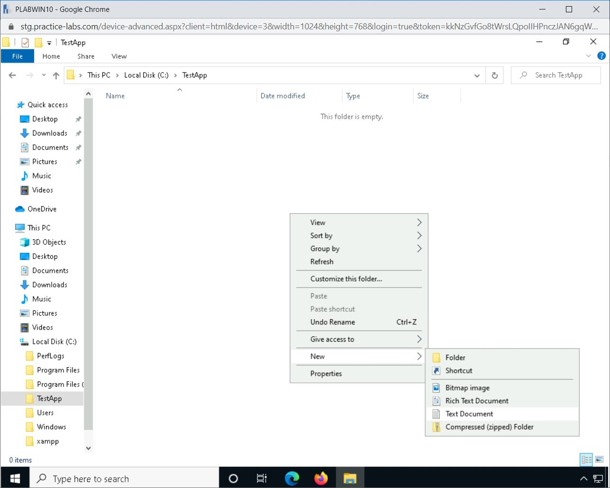
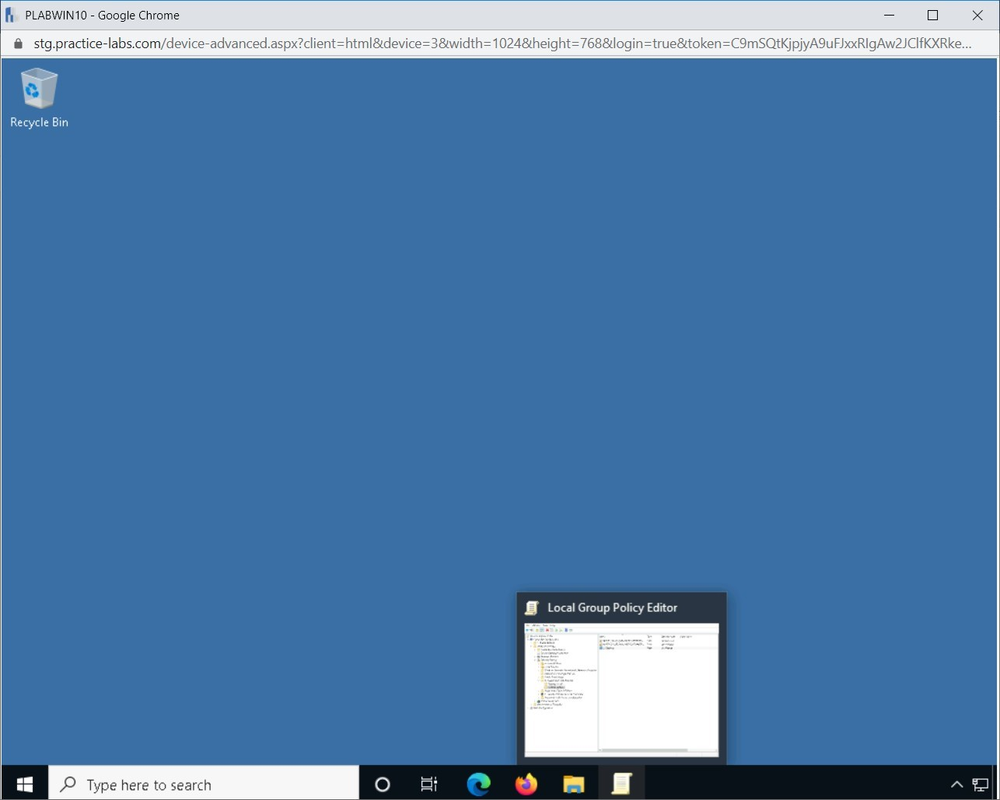
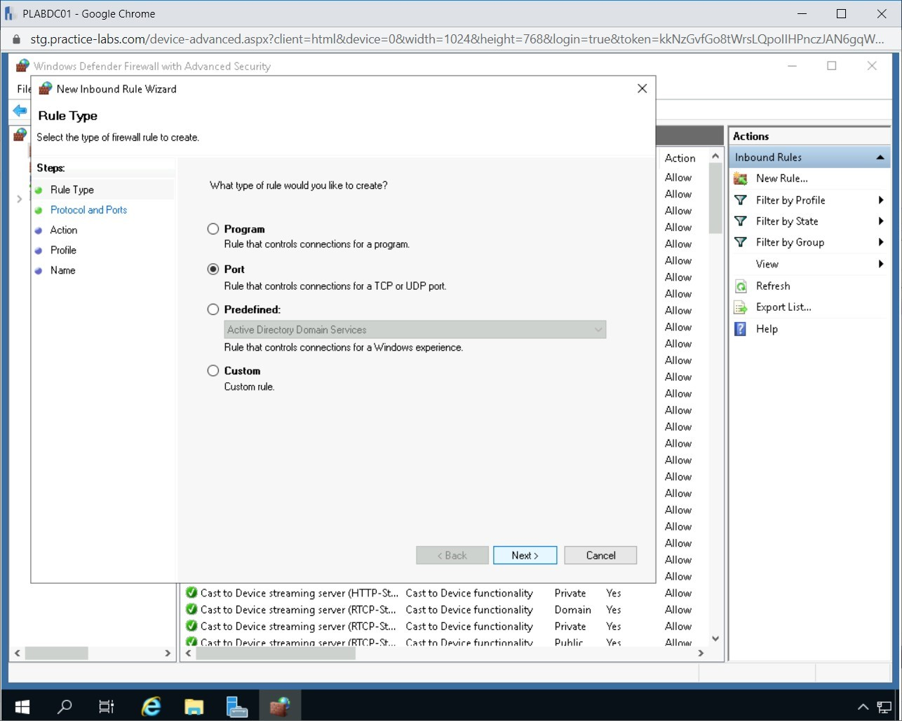

Introduction
bb1840e4-5425-49a3-9d75-477b8f016ff8
Welcome to the Securing an Environment using Mitigating Techniques Practice Lab. In this module, you will be provided with the instructions and devices needed to develop your hands-on skills.
dc640c20-9434-45ea-b7c2-6d4d6a196bfc
Learning Outcomes
In this module, you will complete the following exercises:
- Exercise 1 - Mitigation Techniques
- Exercise 2 - Software Restriction Policies
- Exercise 3 - Firewall
After completing this module, you should have further knowledge of:
- Mobile Device Management (MDM)
- Containment
- Segmentation
- Isolation
- Data Loss Prevention (DLP)
- Secure Orchestration, Automation, and Response (SOAR)
After completing this module, you should be able to:
- Create Software Restriction Policies
- Configure a Basic Firewall Rule
- Block ICMPv4 Traffic
- Configure Logging of Firewall Traffic
Exam Objectives
The following exam objectives are covered in this lab:
4.4 Given an incident, apply mitigation techniques or controls to secure an environment.
- Reconfigure endpoint security solutions
- Configuration changes
- Isolation
- Containment
- Segmentation
- SOAR
Note: Our main
focus is to cover the practical, hands-on aspects of the exam
objectives. We recommend referring to course material or a search engine
to research theoretical topics in more detail.
Lab Duration
It will take approximately 1 hour to complete this lab.
c6fa62a3-1a00-4052-8104-258e8cbaa187
Help and Support
For more information on using Practice Labs, please see our Help and Support page. You can also raise a technical support ticket from this page.
Click Next to view the Lab topology used in this module.
d2c53300-f951-45a9-9aa4-3d4ecae69e11
Lab Topology
During your session, you will have access to the following lab configuration.

Depending on the exercises, you may or may not use all
of the devices, but they are shown here in the layout to get an overall
understanding of the topology of the lab.
- PLABDC01 - Windows Server 2019 (Domain Controller)
- PLABDM01 - Windows Server 2019 (Domain Member Server)
- PLABWIN10 - Windows 10 (Domain Member Workstation)
- PLABKALI - Kali 2019.4 (Stand-alone device)
Click Next to proceed to the first exercise.
<
Home |
README >
CompTIA Security+ Practice Labs
Exercise 1 - Mitigation Techniques
You can apply several mitigation techniques to your
network. However, mitigation techniques should be applied based on the
type of infrastructure you have. For example, if you do not have
critical data that you are handing or flowing through the network, you
really do not require Data Loss Prevention (DLP). On the other hand, if
your organization is handling financial data, you may want to implement
DLP to prevent any kind of data mishandling or sharing.
In this exercise, you will learn about various mitigation techniques.
Learning Outcomes
After completing this exercise, you should have further knowledge of:
- Mobile Device Management (MDM)
- Containment
- Segmentation
- Isolation
- Data Loss Prevention (DLP)
- Secure Orchestration, Automation, and Response (SOAR)
Your Devices
This exercise contains supporting materials for Security+.

Mobile Device Management (MDM)
Most organizations now allow the use of mobile phones
to share their data. However, there is always a risk of data being
stolen or the mobile phone being compromised. However, mobility has
become a necessity for many people, and therefore, organizations often
use different methods to allow the use of mobile phones.
Four methods are commonly used:
1. Bring Your Own Device (BYOD)
Organizations might allow you to bring your own device
for official use. However, the organizations need to ensure that any
corporate data on the mobile phone is secure. To safeguard the data,
mobile phones must be encrypted.
2. Choose Your Own Device (CYOD)
This method allows employees to choose a device. The
employee can either purchase the device from the organization or pay
rent. However, the organization has complete control over the mobile
device.
3. Corporate-Owned, Personally Enabled (COPE)
The organization provides the mobile device to the user. However, as a user, you are only allowed to install pre-approved apps.
4. Corporate-Owned, Business Only (COBO)
The organization provides, controls, and manages the devices. The applications and the data belong to the organization.
MDM
With any of these methods, it can be difficult to
manage the devices. This is where Mobile Device Management (MDM) comes
in. MDM is a feature used in an enterprise network to keep a mobile
device environment secure. MDM can control, configure, update, and
secure remote mobile devices.
Using MDM, you can block rooting, jailbreaking, or any
other feature you do not want the employees to use. MDM also allows you
to restrict the use of any application other than approved applications
from your app store.
If the mobile device containing corporate data is
lost, you can use the Remote Wipe feature to completely wipe the mobile
storage, erase sensitive data and its configuration. As a precautionary
measure, you can enable full device encryption. This will ensure that
the data remains secure and confidential, even if it is stolen.
MDM can be used to enable geofencing, which alerts the
administrator if a user leaves the defined perimeter. Alongside this,
you can also configure asset tracking. Even if the SIM is changed, you
would be able to locate the device.
Containment
In the Incident Response process, containment is a
critical activity. Depending on the nature of the incident, you will
have to select the appropriate containment strategy, which helps you
deal with the incident. The strategy that you select should be able to
limit the damage that is caused by the incident. As soon as an incident
is discovered, the compromised systems should either be isolated or
segmented, depending on the nature of the incident.
Segmentation
Segmentation can be done as a proactive or reactive
approach. In the proactive approach, the network is divided into
different segments. Each segment communicates to the other segments
through a firewall. For example, you have three key segments on the
network:
Figure 1.1 Diagram of Network Segmentation: Showing the network segmentation.
The segments can communicate with each other only
through the firewall, which contains strict rules. In this scenario, if
one of the segments is compromised, then the attacker will not be able
to get into the other segments without traversing through the firewall.
In the reactive mode, you build one or more segments
for containment. Assume that a few systems in one of the given segments
are compromised. To stop the attack from further spreading, a new
segment can be created, and the compromised systems can be moved to this
segment, which is the Containment Segment. After you move the
compromised systems to this segment, you can contain the attack within
this segment if you implement strict firewall rules. However, the
biggest benefit you get is that you can perform a live analysis of the
ongoing attack.
 Figure 1.2 Diagram of Network Segmentation: Showing the network segmentation with a containment segment.
Figure 1.2 Diagram of Network Segmentation: Showing the network segmentation with a containment segment.
Isolation
Isolation works in a slightly different way than
segmentation. Even though it uses segmentation to limit the attacker's
ability to proceed further, you may have to use stronger measures to
limit the attack. One such method that can be used as a stronger measure
is isolation. Two types of isolation can be applied:
- Isolating the affected systems
- Isolating the attacker
Isolating the Affected Systems
In this method, the segment that contains the
compromised systems is completely disconnected and isolated from the
rest of the network. The systems in the isolated segment can communicate
with each other, and therefore, the attacker is still able to access
all these systems. However, access to the other segments is missing
because this particular segment is now completely isolated. The
compromised systems can still have access to the Internet. In this mode,
the attacker can continue to access the compromised systems but cannot
proceed beyond the affected systems on the network as the segment is
isolated.
 Figure 1.3 Diagram of Network Segmentation: Showing the network segmentation with an isolated segment.
Figure 1.3 Diagram of Network Segmentation: Showing the network segmentation with an isolated segment.
Isolating the Attacker
In isolating the attacker mode, a honeypot
environment is configured. It contains “real look-alike data” and
applications, which may attract the attacker. A honeypot is a decoy or a
trap created by organizations to attract hackers into a computer
system. One of the main objectives of using a honeypot is to monitor the
hacker exploit the vulnerabilities of the system, then subsequently
learn the weaknesses of the system, and apply the necessary security
measures to strengthen it from future attacks. While the attacker is
busy exploring the honeypot, its data, and applications, you can monitor
and review the attacker’s activities.
 Figure 1.4 Diagram of Network Segmentation: Showing the network segmentation with a honeypot.
Figure 1.4 Diagram of Network Segmentation: Showing the network segmentation with a honeypot.
Data Loss Prevention (DLP)
Data Loss Prevention or DLP is a set of rules that
are defined to protect confidential and sensitive information. As an
application, DLP contains several rules that help you define the type of
data that the users can share. For example, when DLP is implemented
within an organization, it can scan outbound Emails and track if any
kind of sensitive or confidential information is being shared.
You can have a rule defined that prevents sharing
financial reports or sharing credit card numbers in an Email or its
attachments. Without DLP, it is not possible to track Emails that
contain confidential information. However, as the administrator, with
DLP implementation in place, you can define what type of information the
users can share.
When you share information with the users within an
organization, you can set the permissions, such as forward or print. For
example, you send a confidential management decision to your colleague.
You, however, do not want the colleague to forward or print this Email.
Such restrictions can be defined in the form of permissions.
The key intent of DLP is to tackle insider threats
and also to meet the regulation-driven privacy requirements. DLP has
three key use cases:
- Protect the personal information - DLP is a
good tool if your organization deals with Personally Identifiable
Information (PII), Protected Health Information (PHI), or credit card
information. These types of information are critical and are considered
highly sensitive. With the help of DLP, this information can be
protected.
- Protect the Intellectual Property (IP) - DLP
can help an organization protect its IP information. For example, if an
organization is developing a unique product, it is critical for the
organization to protect product-related information. DLP can help
implement protection for such information.
- Bring Data Visibility - DLP can help you
track information being used by users. For example, you can track who
uses which information and who is sharing or attempting to share
information.
Secure Orchestration, Automation, and Response (SOAR)
There are always challenges in managing and
countering security threats. Secure Orchestration, Automation, and
Response or most commonly known as SOAR, is a set of solutions that
helps the security teams to counter threats, manage vulnerabilities, and
utilize automation to handle routine administrative tasks.
In SOAR, a set of different technologies are combined
and used together to handle and mitigate threats. Various aspects of
security are also combined under the SOAR umbrella. These are:
- Incident Response
- Threat Intelligence
- Security Orchestration and Automation
Runbooks
In Incident Response Management, several tasks are
performed. For example, a notification may need to be triggered when an
incident occurs. Runbooks helps you to automate certain actions to
throttle the incident response process. Runbooks are largely
action-driven activities that need to be carried out. When you refer to a
runbook, it focuses more on the systems and networks where the actions
can be automated. For example, you can create a runbook to resolve a
recurring issue.
Playbooks
A playbook contains steps that can be used to respond
to a security incident. Playbooks are largely used to document several
processes and procedures, which need to be carried out manually and have
human dependencies. For example, a notification that needs to be sent
after a breach has occurred.
7429868b-128c-4069-95a9-7246a6a9e5a3
<
Home |
README >
CompTIA Security+ Practice Labs
Exercise 2 - Software Restriction Policies
Software restriction policies are a policy-driven
mechanism that provides administrators the ability to identify and
control the applications that can run on a Windows computer. The
policies protect Windows clients starting from Windows XP and later
versions from security threats such as viruses and Trojan host programs.
SRPs can either be applied to a local Windows system
using Local Security Policy or through the domain using Group Policy.
With SRPs, an administrator can blacklist or whitelist applications
that the users can run. If an application is whitelisted, the user will
be able to run the application. However, if the application or a
specific path that contains the executables is blacklisted, then the
application’s executable or all executables within the defined path will
be blacklisted.
Using SRPs, an administrator can enhance the domain's security posture by allowing or disallowing only certain applications.
In this exercise, you will learn how to create a
software restriction policy on a local computer based on the file path
and hash rules.
Learning Outcomes
After completing this exercise, you should be able to:
- Create Software Restriction Policies
Your Devices
You will be using the following devices in this lab. Please power these on now.
- PLABDC01 - Windows Server 2019 (Domain Controller)
- PLABWIN10 - Windows 10 (Domain Member Workstation)

Task 1 - Create Software Restriction Policies
The whitelisting method is used for allowing only a
specific application or set of applications. The blacklist method is
used for blocking the application or set of applications from running.
In this task, you will create a sample batch file and then create SRPs to first prevent and then allow the batch file to run.
Step 1
Ensure you have powered on the required devices defined in the introduction and connect to PLABWIN10.
Click File Explorer on the taskbar.
 Figure 2.1 Screenshot of PLABWIN10: Clicking the File Explorer icon in the Windows taskbar.
Figure 2.1 Screenshot of PLABWIN10: Clicking the File Explorer icon in the Windows taskbar.
Step 2
On the File Explorer window, click the View tab.
Figure 2.2 Screenshot of PLABWIN10: Clicking the View tab in File Explorer.
Step 3
At the far right of the toolbar, click Options and select Change folder and search options.
Figure
2.3 Screenshot of PLABWIN10: Clicking Options and then selecting Change
folder and search options on the View tab of the File Explorer window.
Step 4
On the Folder Options dialog box, click the View tab.
Figure 2.4 Screenshot of PLABWIN10: Clicking the View tab in the Folder Options dialog box.
Step 5
From the View tab, under the Advanced settings section, de-select Hide extensions for known file types.
Click OK.
Figure
2.5 Screenshot of PLABWIN10: De-selecting the Hide extensions for known
file types on the View tab of the Folder Options dialog box and then
clicking the OK button.
Step 6
Under This PC node, select and expand Local Disk (C:) drive.
Right-click the Local Disk C drive, point to New, and select Folder.
Figure
2.6 Screenshot of PLABWIN10: Right-clicking Local Disk C on the left
pane of the File Explorer window and selecting New and then Folder.
Step 7
Rename the folder as TestApp.
Figure 2.7 Screenshot of PLABWIN10: Renaming the new folder as TestApp in the File Explorer window.
Step 8
In the left pane, select the TestApp folder.
Then, right-click on the details pane, point to New and select Text document.
Figure 2.8 Screenshot of PLABWIN10: Right-clicking on the details pane, pointing to New and selecting Text Document.
Step 9
Rename the New Text Document.txt as:
app1.bat
Note that you need to change the extension name of the file as well.
Figure 2.9 Screenshot of PLABWIN10: Renaming the New Text Document.txt as app1.bat in the File Explorer window.
Step 10
On the Rename message box, click Yes.
 Figure 2.10 Screenshot of PLABWIN10: Clicking Yes on the Rename message box.
Figure 2.10 Screenshot of PLABWIN10: Clicking Yes on the Rename message box.
Step 11
Right-click app1.bat and select Edit.
 Figure 2.11 Screenshot of PLABWIN10: Right-clicking app1.bat and selecting Edit.
Figure 2.11 Screenshot of PLABWIN10: Right-clicking app1.bat and selecting Edit.
Step 12
On the app1.bat window, type the following:
echo This is a test batch file…
pause
 Figure 2.12 Screenshot of PLABWIN10: Showing the app1.bat file with the newly typed-in text.
Figure 2.12 Screenshot of PLABWIN10: Showing the app1.bat file with the newly typed-in text.
Step 13
Click the File menu and select Save.
 Figure 2.13 Screenshot of PLABWIN10: Clicking the File menu and selecting Save.
Figure 2.13 Screenshot of PLABWIN10: Clicking the File menu and selecting Save.
Step 14
Close the app1.bat window.
 Figure 2.14 Screenshot of PLABWIN10: Closing the app1.bat text file.
Figure 2.14 Screenshot of PLABWIN10: Closing the app1.bat text file.
Similarly, close the File Explorer window.
Step 15
After creating the batch file, you will now restrict the batch file from running.
On PLABWIN10, click on the Type here to search box and type:
gpedit
From the search results, select Edit group policy.
Figure
2.15 Screenshot of PLABWIN10: Entering gpedit in the Type here to
search text box and then selecting Edit group policy from the search
results.
Step 16
On the Local Computer Policy window, expand Computer Configuration > Windows Settings > Security Settings > Software Restriction Policies.
Right-click Software Restriction Policies and select New Software Restriction Policies.
 Figure
2.16 Screenshot of PLABWIN10: Right-clicking Software Restriction
Policies and selecting New Software Restriction Policies on the Local
Group Policy Editor window.
Figure
2.16 Screenshot of PLABWIN10: Right-clicking Software Restriction
Policies and selecting New Software Restriction Policies on the Local
Group Policy Editor window.
Step 17
Two subfolders are added: Security Levels and Additional Rules. In the left pane, expand Software Restriction Policies and then select Security Levels.
The default setting is Unrestricted, which means all applications on the computer can be launched.
Figure
2.17 Screenshot of PLABWIN10: Expanding Software Restriction Policies
and then selecting Security Levels. Showing the default setting as
Unrestricted.
Step 18
Select and then right-click the Additional Rules folder and select New Path Rule.
 Figure 2.18 Screenshot of PLABWIN10: Selecting and then right-clicking the Additional Rules folder and selecting New Path Rule.
Figure 2.18 Screenshot of PLABWIN10: Selecting and then right-clicking the Additional Rules folder and selecting New Path Rule.
Step 19
On the New Path Rule, type the following:
C:\TestApp
Ensure that the Security level is set to Disallowed.
Click OK.
 Figure 2.19 Screenshot of PLABWIN10: Entering the path in the Path textbox and then clicking OK on the New Path Rule dialog box.
Figure 2.19 Screenshot of PLABWIN10: Entering the path in the Path textbox and then clicking OK on the New Path Rule dialog box.
Step 20
The path rule for C:\TestApp is now created.
Minimize the Local Group Policy Editor window.
Figure 2.20 Screenshot of PLABWIN10: Showing the Local Group Policy Editor window with the newly created path rule.
Step 21
Click File Explorer on the taskbar.
In the left pane, expand Local Disk (C:) drive and select the TestApp folder.
Right-click app1.bat and select Open.
Figure 2.21 Screenshot of PLABWIN10: Right-clicking app1.bat and selecting Open.
Step 22
A message box appears saying, “Your system administrator has blocked this program.”
Click OK.
This behavior is expected as the software restriction policy will block the batch file based on its file path.
 Figure
2.22 Screenshot of PLABWIN10: Showing a dialog box informing that the
system administrator has blocked the program and then clicking the OK
button.
Figure
2.22 Screenshot of PLABWIN10: Showing a dialog box informing that the
system administrator has blocked the program and then clicking the OK
button.
Step 23
In this step, you will now test the software restriction policy by copying the batch file to another location.
Right-click app1.bat file and select Copy.
 Figure 2.23 Screenshot of PLABWIN10: Right-clicking app1.bat file and selecting Copy.
Figure 2.23 Screenshot of PLABWIN10: Right-clicking app1.bat file and selecting Copy.
Step 24
Click Local Disk (C:) drive and paste the file on the root drive.
Note: If prompted to confirm copying in the root drive, click Continue.
 Figure 2.24 Screenshot of PLABWIN10: Clicking Local Disk (C:) drive and pasting the file on the root drive.
Figure 2.24 Screenshot of PLABWIN10: Clicking Local Disk (C:) drive and pasting the file on the root drive.
Step 25
Right-click app1.bat in the root drive and select Open.
Figure 2.25 Screenshot of PLABWIN10: Right-clicking app1.bat in the root drive and selecting Open.
Step 26
The batch file runs because the software restriction policy is based on the file path c:\TestApp.
Press Enter to terminate the batch file.
Figure 2.26 Screenshot of PLABWIN10: Showing the running batch file paused in the command prompt window.
Step 27
Minimize the File Explorer window.
Restore Local Group Policy Editor from the taskbar.
Figure 2.27 Screenshot of PLABWIN10: Restoring Local Group Policy Editor from the taskbar.
Step 28
On the Local Group Policy Editor window, right-click C:\TestApp and select Delete.
Figure 2.28 Screenshot of PLABWIN10: Right-clicking C:\TestApp and selecting Delete in the Local Group Policy Editor window.
Step 29
Click Yes to delete the rule.
Figure 2.29 Screenshot of PLABWIN10: Clicking Yes to delete the rule in the Software Restriction Policies dialog box.
Step 30
Right-click the details pane at the right and then select New Hash Rule.
 Figure 2.30 Screenshot of PLABWIN10: Right-clicking the details pane at the right and then selecting New Hash Rule.
Figure 2.30 Screenshot of PLABWIN10: Right-clicking the details pane at the right and then selecting New Hash Rule.
Step 31
On the New Hash Rule dialog box, click Browse.
 Figure 2.31 Screenshot of PLABWIN10: Clicking Browse on the New Hash Rule dialog box.
Figure 2.31 Screenshot of PLABWIN10: Clicking Browse on the New Hash Rule dialog box.
Step 32
On the Open dialog box, expand Local Disk (C:) drive then click the TestApp folder.
At the right details pane, select app1.bat.
Click Open.
 Figure 2.32 Screenshot of PLABWIN10: Selecting app1.bat in the Open dialog box and clicking Open.
Figure 2.32 Screenshot of PLABWIN10: Selecting app1.bat in the Open dialog box and clicking Open.
Step 33
On the New Hash Rule, a summary of the File information is displayed.
The Security level must be set to Disallowed.
Click OK.
Figure 2.33 Screenshot of PLABWIN10: Clicking OK on the New Hash Rule dialog box.
Step 34
The Local Group Policy Editor has the new hash rule added.
Close Local Group Policy Editor.
Figure
2.34 Screenshot of PLABWIN10: Showing the newly created rule is listed
on the Local Group Policy Editor window and then closing the window.
Step 35
Restore File Explorer from the taskbar.
On the File Explorer window, ensure that you are in Local Disk (C:) drive.
Right-click app1.bat and select Open.
 Figure 2.35 Screenshot of PLABWIN10: Right-clicking app1.bat and selecting Open in the File Explorer window.
Figure 2.35 Screenshot of PLABWIN10: Right-clicking app1.bat and selecting Open in the File Explorer window.
Step 36
After a change in the software restriction policy to hash rule, notice that the app1.bat is blocked regardless of its location.
Figure
2.36 Screenshot of PLABWIN10: Clicking OK on the C:\app1.bat dialog box
that displays the error of running the batch file.
a5adbee1-b3d4-422f-907b-2999d763f275
Click OK.
Close all open windows.
Leave all devices in their current state and proceed to the next exercise.
<
Home |
README >
CompTIA Security+ Practice Labs
Exercise 3 - Firewall
A Windows firewall can be configured locally or can
be configured through a group policy that is centrally managed from a
Domain controller. In these exercises, the firewall will be locally
managed.
In this exercise, you will learn to configure the Windows firewall to harden the system against possible attacks.
Learning Outcomes
After completing this exercise, you should be able to:
- Configure a Basic Firewall Rule
- Block ICMPv4 Traffic
- Configure Logging of Firewall Traffic
Your Devices
You will be using the following devices in this lab. Please power these on now.
- PLABDC01 - Windows Server 2019 (Domain Controller)
- PLABWIN10 - Windows 10 (Domain Member Workstation)
- PLABKALI - Kali 2019.4 (Stand-alone device)

Task 1 - Configure a Basic Firewall Rule
Windows Firewall or Windows Defender Firewall is
available in all variants of Windows. You can use the desktop version,
such as Windows 10, or a server version, such as Windows Server 2019.
Each one will have a basic configuration of Windows Defender Firewall
pre-configured. You can, however, choose to alter the configuration by
adding, removing, or altering the rules.
In this task, a basic local firewall rule will be created using the Windows Defender firewall application on PLABDC01 on the network.
Step 1
Ensure that all the required devices are powered on.
Connect to PLABDC01. Server Manager is displayed by default. Minimize the Server Manager window.
 Figure 3.1 Screenshot of PLABDC01: Displaying the Desktop with the Server Manager window.
Figure 3.1 Screenshot of PLABDC01: Displaying the Desktop with the Server Manager window.
Step 2
Click Start and type the following:
Windows Defender Firewall with Advanced Security
Select Windows Defender Firewall with Advanced Security.
Note: Even if you type Windows Defender, you will still get Windows Defender Firewall with Advanced Security in the search results.
Figure 3.2 Screenshot of PLABDC01: Selecting Windows Defender Firewall with Advanced Security from the search results.
Step 3
The Windows Defender Firewall with Advanced Security window is displayed. In the left pane, Windows Defender Firewall with Advanced Security is selected by default.
 Figure
3.3 Screenshot of PLABDC01: Displaying the Windows Defender Firewall
with Advanced Security window with the Windows Defender Firewall with
Advanced Security selected in the left pane.
Figure
3.3 Screenshot of PLABDC01: Displaying the Windows Defender Firewall
with Advanced Security window with the Windows Defender Firewall with
Advanced Security selected in the left pane.
Step 4
Select Inbound Rules in the Windows Defender Firewall with Advanced Security application.
 Figure
3.4 Screenshot of PLABDC01: Displaying selecting inbound rules in the
Windows Defender Firewall with Advanced Security application.
Figure
3.4 Screenshot of PLABDC01: Displaying selecting inbound rules in the
Windows Defender Firewall with Advanced Security application.
Step 5
Select New Rule in the Actions pane.
 Figure 3.5 Screenshot of PLABDC01: Selecting the New Rule option in the right Actions pane.
Figure 3.5 Screenshot of PLABDC01: Selecting the New Rule option in the right Actions pane.
Step 6
The New Inbound Rule Wizard is displayed. On the Rule Type page, select the Port option and click Next.
Figure 3.6 Screenshot of PLABDC01: Displaying selecting the port option and then clicking Next on the Rule Type page.
Note: The new firewall rule that is created will open a specific port for an application to connect.
Step 7
In the New Inbound Rule Wizard, ensure TCP is selected and in the Specific local ports text box, type the following:
1433
Click Next.
Note: TCP port
1433 is used by SQL for incoming connections. In this exercise, this
port is opened to illustrate how to create an inbound connection on a
specific port.
Figure 3.7 Screenshot of PLABDC01: Entering the port 1433 in the Specific local ports textbox and then clicking Next.
Step 8
In the New Inbound Rule Wizard, select Allow the connection if it is secure.
Click the Customize button.
 Figure 3.8 Screenshot of PLABDC01: Selecting the Allow the connection if it is a secure option and then clicking Customize.
Figure 3.8 Screenshot of PLABDC01: Selecting the Allow the connection if it is a secure option and then clicking Customize.
Step 9
The Customize Allow if Secure Settings dialog box is displayed.
Select Require the connections to be encrypted bullet and click the Allow the computer to dynamically negotiate encryption checkbox.
Click OK.
 Figure
3.9 Screenshot of PLABDC01: Displaying Customize Allow if Secure
settings dialog box and selecting Require the connections to be
encrypted and also selecting Allow the computers to dynamically
negotiate encryption.
Figure
3.9 Screenshot of PLABDC01: Displaying Customize Allow if Secure
settings dialog box and selecting Require the connections to be
encrypted and also selecting Allow the computers to dynamically
negotiate encryption.
Step 10
Click Next in the New Inbound Rule Wizard window.
Figure 3.10 Screenshot of PLABDC01: Clicking Next in the New Inbound Rule Wizard window.
Step 11
In the New Inbound Rule Wizard, select Only allow connections from these users and then click Add.
 Figure 3.11 Screenshot of PLABDC01: Selecting Only allow connections from these users and then clicking Add.
Figure 3.11 Screenshot of PLABDC01: Selecting Only allow connections from these users and then clicking Add.
Step 12
In the Enter the object names to select box, enter the following Names:
SQLAdmin
and click Check Names.
Figure 3.12 Screenshot of PLABDC01: Entering SQLAdmin in the Enter the object names to select text box and clicking Check Names.
Step 13
After the name has been checked, click OK to close the Select Users, Computers, or Groups window.
Figure 3.13 Screenshot of PLABDC01: Clicking OK to close the Select Users, Computers, or Groups window.
Step 14
In the New Inbound Rule Wizard, in the Users window, select Next.
Note: By specifying a user, only that user will be able to connect to the computer using port 1433.
Figure 3.14 Screenshot of PLABDC01: Clicking Next on the Users page of the New Inbound Rule Wizard.
Step 15
On the Computers page of the New Inbound Rule Wizard, select the Only allow connections from these computers checkbox and click Add.
Figure 3.15 Screenshot of PLABDC01: Selecting the Only allow connections from these computers checkbox and clicking Add.
Step 16
In the Select Computers or Groups dialog box, type the following name in the Enter the object names to select textbox:
PLABWIN10
Click Check Names.
Figure 3.16 Screenshot of PLABDC01: Entering PLABWIN10 in the Enter the object names to select textbox and clicking Check Names.
Step 17
Click OK to close the window.
 Figure 3.17 Screenshot of PLABDC01: Clicking OK to close the window.
Figure 3.17 Screenshot of PLABDC01: Clicking OK to close the window.
Step 18
Select Next in the New Inbound Rule Wizard.
 Figure 3.18 Screenshot of PLABDC01: Selecting Next in the New Inbound Rule Wizard.
Figure 3.18 Screenshot of PLABDC01: Selecting Next in the New Inbound Rule Wizard.
Step 19
On the Where does this rule apply? window, de-select Private / Public, and keep Domain selected.
Click Next.
Note: By
selecting only the domain profile, this rule will only apply to
computers connected to the domain. The computers will be able to connect
through this port with the specified user and computer. Thus,
protecting the port.
 Figure 3.19 Screenshot of PLABDC01: Displaying the selection of only the Domain profile.
Figure 3.19 Screenshot of PLABDC01: Displaying the selection of only the Domain profile.
Step 20
In the Name field on the Name page, type the following.
PLAB SQL Inbound Rule
Click Finish
Figure 3.20 Screenshot of PLABDC01: Entering the name for the inbound rule and clicking Finish.
Step 21
The new Inbound Rule with the name PLAB SQL Inbound Rule has been created.
Note: Various
other Inbound rules can be created using this method, depending on which
ports or services need to be made available on the network and the
server.
 Figure 3.21 Screenshot of PLABDC01: Displaying the New Inbound Rule that has been successfully created.
Figure 3.21 Screenshot of PLABDC01: Displaying the New Inbound Rule that has been successfully created.
Task 2 - Block ICMPv4 Traffic
ICMPv4 traffic is blocked to prevent an unauthorized
user scanning and footprinting the network. Blocking ICMPv4 traffic can
also prevent a Denial of service attack. In this task, you will learn to
block the ICMPv4 traffic to PLABDC01. To do this, perform the following steps:
Step 1
Ensure that all the required devices are powered on. Connect to PLABDC01. Windows Defender Firewall with Advanced Security window should be open.
Ensure that the Inbound Rules option is selected in the left pane.
Figure 3.22 Screenshot of PLABDC01: Displaying selecting Inbound rules in Windows Defender Firewall with Advanced Security.
Step 2
Scroll down and right-click File and Printer Sharing (Echo Request - ICMPv4-In) and then select Properties.
 Figure
3.23 Screenshot of PLABDC01: Displaying opening properties of File and
Printer Sharing (Echo Request - ICMPv4-In) Inbound Rule.
Figure
3.23 Screenshot of PLABDC01: Displaying opening properties of File and
Printer Sharing (Echo Request - ICMPv4-In) Inbound Rule.
Step 3
In the General tab of the File and Printer Sharing (Echo Request - ICMPv4-In) Properties, select Block the connection in the Action section.
 Figure
3.24 Screenshot of PLABDC01: Displaying File and Printer Sharing (Echo
Request - ICMPv4-In) properties window with the required option
selected.
Figure
3.24 Screenshot of PLABDC01: Displaying File and Printer Sharing (Echo
Request - ICMPv4-In) properties window with the required option
selected.
Step 4
Click OK to apply the changes that have been made to File and Printer Sharing (Echo Request - ICMPv4-In) Properties.
 Figure
3.25 Screenshot of PLABDC01: Displaying clicking OK on the File and
Printer Sharing (Echo Request - ICMPv4-In) Properties window.
Figure
3.25 Screenshot of PLABDC01: Displaying clicking OK on the File and
Printer Sharing (Echo Request - ICMPv4-In) Properties window.
Step 5
Connect to PLABKALI.
If you are shown a log in screen, enter the following device credentials.
Username: root
Password: Passw0rd
Figure 3.26 Screenshot of PLABKALI: Displaying the Desktop.
Step 6
Right-click on the Desktop and select Open Terminal Here.
Figure 3.27 Screenshot of PLABKALI: Displaying opening the terminal window from the context menu.
Step 7
Type the following command in the terminal window:
ping 192.168.0.1
Press Enter.
Figure 3.28 Screenshot of PLABKALI: Displaying entering the ping command in the terminal window.
Step 8
Press Crl+C on the keyboard to abort the command.
Note: After executing the ping command, it is displayed that the Kali machine is unable to communicate with PLABDC01.
 Figure 3.29 Screenshot of PLABKALI: Displaying aborting the ping command.
Figure 3.29 Screenshot of PLABKALI: Displaying aborting the ping command.
Task 3 - Configure Logging of Firewall Traffic
The traffic that moves across the firewall will be
logged. This log file can be used to view the specific traffic and
possibly identify unsolicited traffic on the network. IPsec specifies
how computers authenticate with each other on the network.
In this task, you will learn to configure the logging of the firewall traffic. To do this, perform the following steps:
Step 1
Connect to PLABDC01. Ensure that the Inbound Rules option is selected in the left pane in Windows Defender Firewall with Advanced Security window.
Note: If the Windows Defender with Advanced Security has been closed, please repeat Steps 2-4 of Task 1.
 Figure 3.30 Screenshot of PLABDC01: Displaying connected to PLABDC01 with Windows Defender with Advanced security window open.
Figure 3.30 Screenshot of PLABDC01: Displaying connected to PLABDC01 with Windows Defender with Advanced security window open.
Step 2
Right-click Windows Defender Firewall with Advanced Security and select Properties.
Figure 3.31 Screenshot of PLABDC01: Displaying opening the properties of the Windows Defender Firewall with Advanced Security.
Step 3
In the Logging section, select Customize on the Domain Profile tab.
 Figure
3.32 Screenshot of PLABDC01: Displaying Windows Defender Firewall with
Advanced Security Properties dialog box with the Customize button
selected.
Figure
3.32 Screenshot of PLABDC01: Displaying Windows Defender Firewall with
Advanced Security Properties dialog box with the Customize button
selected.
Step 4
In the Customize Logging Settings for the Domain Profile, from the Log dropped packets drop-down, select Yes.
 Figure 3.33 Screenshot of PLABDC01: Displaying changing the Log dropped packets setting.
Figure 3.33 Screenshot of PLABDC01: Displaying changing the Log dropped packets setting.
Step 5
In the Log successful connections, select Yes.
Figure 3.34 Screenshot of PLABDC01: Displaying changing the Log successful connections setting.
Step 6
Click OK to close the Customize Logging Settings for the Domain Profile window.
Figure 3.35 Screenshot of PLABDC01: Displaying closing Customize Logging Settings for the Domain Profile window.
Step 7
Click the Private Profile tab in Windows Defender Firewall with Advanced Security properties dialog box.
 Figure
3.36 Screenshot of PLABDC01: Displaying Windows Defender Firewall with
Advanced Security Properties dialog box with the Private Profile tab
selected.
Figure
3.36 Screenshot of PLABDC01: Displaying Windows Defender Firewall with
Advanced Security Properties dialog box with the Private Profile tab
selected.
Step 8
Click Customize in the Logging section.
 Figure 3.37 Screenshot of PLABDC01: Displaying selecting the Customize button on the Private Profile tab.
Figure 3.37 Screenshot of PLABDC01: Displaying selecting the Customize button on the Private Profile tab.
Step 9
In the Log dropped packets and Log successful connections drop-down, select Yes.
 Figure 3.38 Screenshot of PLABDC01: Displaying enabling logging for the Private Profile.
Figure 3.38 Screenshot of PLABDC01: Displaying enabling logging for the Private Profile.
Step 10
Select OK to close the Private Profile settings window.
 Figure 3.39 Screenshot of PLABDC01: Displaying closing Private Profile logging window.
Figure 3.39 Screenshot of PLABDC01: Displaying closing Private Profile logging window.
Step 11
Click the Public Profile tab in Windows Defender Firewall with Advanced Security properties dialog box.
 Figure 3.40 Screenshot of PLABDC01: Displaying opening Public Profile tab.
Figure 3.40 Screenshot of PLABDC01: Displaying opening Public Profile tab.
Step 12
Click Customize in the Logging section on the Public Profile tab.
 Figure 3.41 Screenshot of PLABDC01: Displaying selecting Customize in the Public Profile tab.
Figure 3.41 Screenshot of PLABDC01: Displaying selecting Customize in the Public Profile tab.
Step 13
In the Log dropped packets and Log successful connections drop-downs, select Yes and click OK.
 Figure 3.42 Screenshot of PLABDC01: Displaying enabling logging for the Public Profile.
Figure 3.42 Screenshot of PLABDC01: Displaying enabling logging for the Public Profile.
Step 14
Select OK to close the Windows Defender Firewall with Advanced Security window.
 Figure 3.43 Screenshot of PLABDC01: Displaying closing the Windows Defender Firewall with Advanced Security window.
Figure 3.43 Screenshot of PLABDC01: Displaying closing the Windows Defender Firewall with Advanced Security window.
Step 15
Connect to PLABKALI. The terminal window should be opened.
Figure 3.44 Screenshot of PLABKALI: Displaying the terminal window.
Step 16
In the Terminal window, type the following command:
ping 192.168.0.1
Press Enter.
 Figure 3.45 Screenshot of PLABKALI: Displaying entering the ping command.
Figure 3.45 Screenshot of PLABKALI: Displaying entering the ping command.
Step 17
Connect to PLABDC01.
 Figure 3.46 Screenshot of PLABDC01: Displaying Windows Defender Firewall with Advanced Security window.
Figure 3.46 Screenshot of PLABDC01: Displaying Windows Defender Firewall with Advanced Security window.
Step 18
Select Monitoring in the Windows Defender Firewall with Advanced Security window.
 Figure
3.47 Screenshot of PLABDC01: Displaying selecting Monitoring on the
Windows Defender Firewall with Advanced Security window.
Figure
3.47 Screenshot of PLABDC01: Displaying selecting Monitoring on the
Windows Defender Firewall with Advanced Security window.
Step 19
In the Monitoring window, select the Log file in the Logging Settings section.
 Figure 3.48 Screenshot of PLABDC01: Displaying selecting the log file in the Monitoring section.
Figure 3.48 Screenshot of PLABDC01: Displaying selecting the log file in the Monitoring section.
Step 20
The pfirewall file is opened. Scroll to the bottom of the pfirewall.log Log to view the latest logs.
Note: After reviewing the log file, it can be seen that the packets of PLABKALI have been rejected. The IP address of PLABKALI can also be seen in the log file.
 Figure 3.49 Screenshot of PLABDC01: Displaying the pfirewall.log file.
c5507563-3e73-4ff7-bcbb-c1e8c80814f3
d31298f5-3011-4089-bf06-fbf08c44a7f9
Keep all devices that you have powered on in their current state and proceed to the review section.
Figure 3.49 Screenshot of PLABDC01: Displaying the pfirewall.log file.
c5507563-3e73-4ff7-bcbb-c1e8c80814f3
d31298f5-3011-4089-bf06-fbf08c44a7f9
Keep all devices that you have powered on in their current state and proceed to the review section.
Review
Well done, you have completed the Securing an Environment Using Mitigating Techniques Practice Lab.
c6e74811-6d1f-4779-94c2-34fcca239022
672a7e53-f753-48bb-addf-5aad4838b50a
f745361e-cb66-412e-8729-ea41adce8bd1
b019928a-ca78-4541-b4c5-0d61419dfc32
46920ea7-22cf-4b24-a836-d26d05a8c27c
353059c9-dc3f-4309-b55e-5fb3e9bd9026
aaaaaaaa-1111-1111-1111-193f35a24fe3
Summary
You completed the following exercises:
- Exercise 1 - Mitigation Techniques
- Exercise 2 - Software Restriction Policies
- Exercise 3 - Firewall
You should now have further knowledge of:
- Mobile Device Management (MDM)
- Containment
- Segmentation
- Isolation
- Data Loss Prevention (DLP)
- Secure Orchestration, Automation, and Response (SOAR)
You should now be able to:
- Create Software Restriction Policies
- Configure a Basic Firewall Rule
- Block ICMPv4 Traffic
- Configure Logging of Firewall Traffic
Feedback
067744a4-4299-4662-b5be-04dbb636a007
Shutdown all virtual machines used in this lab. Alternatively, you can log out of the lab platform.